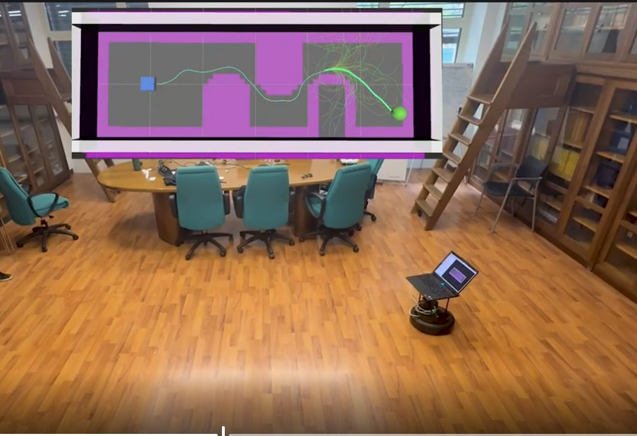
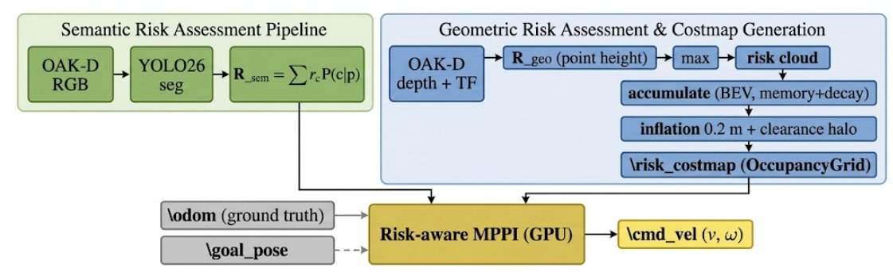
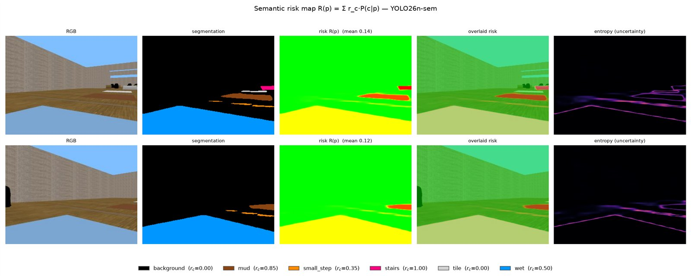
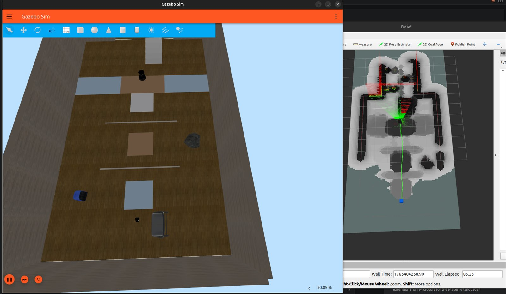
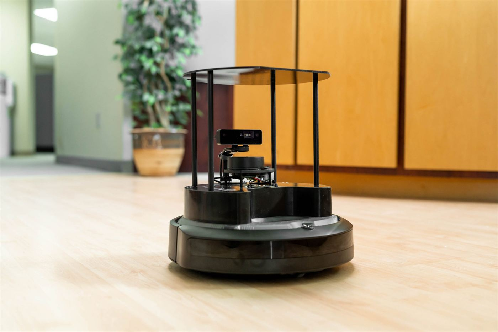

P / 01
Navigation risk-aware d'un UGV -
Perception, MPPI & modélisation
Risk-aware UGV navigation -
Perception, MPPI & modelling

Le problèmeThe problem
Un robot mobile d'intérieur doit éviter des dangers qu'un LiDAR 2D standard ne peut tout simplement pas percevoir : sol mouillé, boue, tapis épais, seuils de porte. Le faisceau LiDAR balaie un seul plan horizontal et ne réagit qu'aux obstacles rigides verticaux - il ne fait aucune différence entre un carrelage sec et un carrelage mouillé, et ne perçoit un escalier que par sa première marche. Géométriquement, ces surfaces sont plates ; physiquement, elles peuvent faire déraper ou enliser le robot.
An indoor mobile robot has to avoid hazards that a standard 2D LiDAR simply cannot perceive: wet floors, mud, thick carpet, door thresholds. The LiDAR beam sweeps a single horizontal plane and only reacts to rigid vertical obstacles - it cannot tell dry tiles from wet ones, and it only sees a staircase through its first step. Geometrically these surfaces are flat; physically, they can make the robot slip or get stuck.
Le MPPI (Model Predictive Path Integral) est un contrôleur d'échantillonnage stochastique massivement parallèle, très efficace pour la navigation d'un véhicule terrestre autonome (UGV) : il génère des milliers de trajectoires candidates à chaque pas de temps sur GPU et retient le meilleur compromis selon une fonction de coût. Mais le MPPI classique ne raisonne que sur une carte d'occupation géométrique : sans perception sémantique, il ne peut tout simplement pas voir le danger.
MPPI (Model Predictive Path Integral) is a massively parallel, sampling-based stochastic controller that works very well for unmanned ground vehicle (UGV) navigation: at every time step it rolls out thousands of candidate trajectories on the GPU and keeps the best trade-off according to a cost function. But standard MPPI only reasons over a geometric occupancy map: without semantic perception, it simply cannot see the hazard.
Mon stage au Politecnico di Torino (DIMEAS), sous la supervision des Prof. Fausto Francesco Lizzio et Elisa Capello, a consisté à combler ce manque de perception, en donnant au contrôleur une compréhension du terrain - sa nature, et non plus seulement sa géométrie.
My internship at Politecnico di Torino (DIMEAS), supervised by Prof. Fausto Francesco Lizzio and Prof. Elisa Capello, was about closing that perception gap by giving the controller an understanding of the terrain - what it is made of, not just its geometry.
Mon approcheMy approach
J'ai construit un pipeline en deux temps, connectés par une seule interface : une carte de coût publiée en temps réel sur ROS 2.
I built a two-stage pipeline joined by a single interface: a cost map published in real time over ROS 2.
1. Perception - une carte de risque à deux couches. Une couche sémantique : un réseau de segmentation transforme chaque pixel caméra en un risque attendu R(p) = Σ r_c · P(c|p). J'ai entraîné et comparé trois architectures - SegFormer-B0, DeepLabV3+/MobileNetV2 et YOLO26 - et retenu YOLO26 pour le déploiement : à précision quasi identique, il est 5 à 6× plus rapide en inférence CPU (≈46 FPS contre 7-10 FPS), ce qui permet un fonctionnement embarqué sans GPU. Une couche géométrique : les obstacles rigides (murs, objets) sont détectés depuis le nuage de points de la caméra de profondeur OAK-D Pro. Les deux couches sont fusionnées par un maximum prudent et accumulées dans une carte de coût persistante en vue de dessus (costmap).
1. Perception - a two-layer risk map. A semantic layer: a segmentation network turns every camera pixel into an expected risk R(p) = Σ r_c · P(c|p). I trained and compared three architectures - SegFormer-B0, DeepLabV3+/MobileNetV2 and YOLO26 - and selected YOLO26 for deployment: at nearly the same accuracy it is 5 to 6× faster on CPU inference (≈46 FPS vs 7-10 FPS), which allows GPU-free embedded operation. A geometric layer: rigid obstacles (walls, objects) are detected from the OAK-D Pro depth point cloud. Both layers are fused with a conservative maximum and accumulated into a persistent bird's-eye-view cost map (costmap).
2. Contrôle - un contrôleur GPU risk-aware MPPI. Construit sur la bibliothèque MPPI-Generic, avec une fonction de coût personnalisée en CUDA qui échantillonne directement la carte de risque comme une texture GPU. Un unique paramètre, λ_risk, règle le comportement du robot, du risque-aveugle (MPPI standard) au fortement risque-averse. Le contrôleur simule 5120 trajectoires en parallèle à chaque cycle de décision, à 14 Hz, sur un horizon de ~14 secondes.
2. Control - a risk-aware GPU MPPI controller. Built on the MPPI-Generic library, with a custom CUDA cost function that samples the risk map directly as a GPU texture. A single parameter, λ_risk, tunes the robot's behaviour from risk-blind (standard MPPI) to strongly risk-averse. The controller simulates 5,120 trajectories in parallel at every decision cycle, at 14 Hz, over a ~14-second horizon.
3. Le point le plus différenciant - un modèle d'arbitrage de coût. Au-delà de l'implémentation, j'ai dérivé analytiquement un modèle qui prédit, pour un danger et une géométrie donnés, le seuil exact de λ_risk auquel le robot bascule de « traverser » à « faire un détour ». Testé contre des mesures réelles, ce modèle initial sous-estimait le seuil d'un ordre de grandeur ; corrigé en identifiant le facteur manquant (le poids de distance à l'objectif du contrôleur), il prédit ensuite le bon ordre de grandeur du seuil mesuré. Une vraie démarche scientifique - hypothèse, test, correction, revalidation, discussion des limites restantes - plutôt qu'un réglage empirique par essai-erreur.
3. What sets it apart - a cost-arbitration model. Beyond the implementation, I analytically derived a model that predicts, for a given hazard and geometry, the exact λ_risk threshold at which the robot switches from "cross" to "detour". Tested against real measurements, this first model underestimated the threshold by an order of magnitude; once corrected by identifying the missing factor (the controller's goal-distance weight), it then predicted the right order of magnitude of the measured threshold. A genuine scientific loop - hypothesis, test, correction, revalidation, discussion of the remaining limits - rather than trial-and-error tuning.
Ce que j'ai construitWhat I built
J'ai mis en place une chaîne de simulation complète sous Gazebo Harmonic et ROS 2 Jazzy, autour d'un TurtleBot 4 (base iRobot Create 3, caméra OAK-D Pro RGB-D, LiDAR RPLIDAR A1, Raspberry Pi 4). Plusieurs mondes de simulation ont servi de bancs d'essai : un entrepôt multi-pièces pour la capture du jeu de données, une arène nue reproduisant les dimensions du cage de test réel, et des scénarios contrôlés isolant chacun une décision précise du contrôleur (traversée forcée, détour évitable, slalom).
I set up a complete simulation pipeline in Gazebo Harmonic and ROS 2 Jazzy around a TurtleBot 4 (iRobot Create 3 base, OAK-D Pro RGB-D camera, RPLIDAR A1 LiDAR, Raspberry Pi 4). Several simulated worlds served as test benches: a multi-room warehouse for dataset capture, a bare arena matching the dimensions of the real test cage, and controlled scenarios each isolating one specific controller decision (forced crossing, avoidable detour, slalom).
Sur deux scénarios contrôlés, comparer le MPPI standard (λ_risk = 0) au MPPI risk-aware réglé donne des résultats chiffrés nets : 44 % de réduction de l'exposition au risque réel sur une traversée forcée mur-à-mur, et 100 % de réduction sur une zone évitable en champ ouvert (le robot l'évite entièrement via un léger détour) - pour un surcoût de seulement 2 à 9 % en distance et en temps. J'ai aussi identifié un régime de λ_risk trop élevé où plus de prudence n'apporte plus aucun bénéfice de sécurité et déstabilise au contraire le contrôleur dans une hésitation indéfinie (le robot tourne en rond sans avancer) - un phénomène de blocage documenté et expliqué par le modèle théorique.
On two controlled scenarios, comparing standard MPPI (λ_risk = 0) with the tuned risk-aware MPPI gives clear figures: a 44% reduction in real risk exposure on a wall-to-wall forced crossing, and a 100% reduction on an avoidable zone in open space (the robot avoids it entirely with a slight detour) - for an overhead of only 2 to 9% in distance and time. I also identified a regime where λ_risk is too high: extra caution no longer brings any safety benefit and instead destabilises the controller into endless hesitation (the robot circles without making progress) - a deadlock documented and explained by the theoretical model.
Démonstration sur robot réelReal-robot demonstration
Le contrôleur a été démontré sur un TurtleBot 4 physique : piloté par une carte de risque « vérité terrain » injectée directement dans le costmap (sans caméra pour cette démonstration précise), le robot navigue réellement dans une pièce en évitant des obstacles qui n'existent que virtuellement dans la carte de coût - une façon contrôlée, reproductible et sans danger matériel de valider le comportement d'évitement de risque sur du vrai hardware.
The controller was demonstrated on a physical TurtleBot 4: driven by a ground-truth risk map injected directly into the costmap (no camera for this particular demo), the robot really navigates a room while avoiding obstacles that only exist virtually in the cost map - a controlled, repeatable and hardware-safe way to validate the risk-avoidance behaviour on real hardware.
L'intégration complète (perception embarquée par caméra + contrôle, simultanément sur le robot réel) a été tentée via une architecture « ghost-twin » avec un jumeau numérique Gazebo télé-porté en temps réel, mais n'a pas abouti dans le temps du stage à cause de problèmes de fiabilité réseau (DDS) entre le robot réel et la simulation - c'est le prochain travail à faire.
Full integration (on-board camera perception + control, simultaneously on the real robot) was attempted through a "ghost-twin" architecture with a Gazebo digital twin teleported in real time, but it could not be completed within the internship because of network reliability issues (DDS) between the real robot and the simulation - that is the next piece of work.
GalerieGallery




RésultatsResults
- Carte de risque à deux couches (sémantique + géométrique) avec implémentation ROS 2 temps réel, publiant un costmap persistant en vue de dessus
- Comparaison de trois backbones de segmentation (SegFormer-B0, DeepLabV3+/MobileNetV2, YOLO26) - YOLO26 retenu pour le déploiement, 5-6× plus rapide en inférence CPU (≈46 FPS vs 7-10 FPS)
- Contrôleur GPU risk-aware MPPI (bibliothèque MPPI-Generic, fonction de coût CUDA personnalisée, 5120 trajectoires/cycle à 14 Hz) avec diagnostics en direct
- Modèle quantitatif d'arbitrage de coût, dérivé puis corrigé et revalidé contre des mesures réelles - transforme le réglage du contrôleur en calcul plutôt qu'en essai-erreur
- Réduction de l'exposition au risque réel de 44 % (traversée forcée) et 100 % (zone évitable), pour un surcoût de seulement 2-9 % en distance et en temps
- Démonstration sur TurtleBot 4 physique, naviguant un champ de risque virtuel injecté dans le costmap
- Two-layer risk map (semantic + geometric) implemented in real time on ROS 2, publishing a persistent bird's-eye-view costmap
- Comparison of three segmentation backbones (SegFormer-B0, DeepLabV3+/MobileNetV2, YOLO26) - YOLO26 selected for deployment, 5-6× faster on CPU inference (≈46 FPS vs 7-10 FPS)
- Risk-aware GPU MPPI controller (MPPI-Generic library, custom CUDA cost function, 5,120 trajectories/cycle at 14 Hz) with live diagnostics
- Quantitative cost-arbitration model, derived then corrected and revalidated against real measurements - it turns controller tuning into a calculation instead of trial and error
- Real risk exposure reduced by 44% (forced crossing) and 100% (avoidable zone), for only 2-9% overhead in distance and time
- Demonstrated on a physical TurtleBot 4 navigating a virtual risk field injected into the costmap
Rapport de stageInternship report
Le rapport complet (31 pages) détaille l'état de l'art, l'architecture du système, la carte de risque à deux couches, le contrôleur GPU MPPI, le modèle d'arbitrage de coût et l'ensemble de la campagne expérimentale.
The full report (31 pages) covers the state of the art, the system architecture, the two-layer risk map, the GPU MPPI controller, the cost-arbitration model and the whole experimental campaign.
Technologies
- ROS 2 Jazzy
- Gazebo Harmonic
- C++ / CUDA
- Python
- PyTorch
- SegFormer-B0 / DeepLabV3+ / YOLO26
- Segmentation sémantiqueSemantic segmentation
- MPPI-Generic (GPU)
- TurtleBot 4 · Create 3
- OAK-D Pro (caméra RGB-D)OAK-D Pro (RGB-D camera)
- RPLIDAR A1
- Raspberry Pi 4